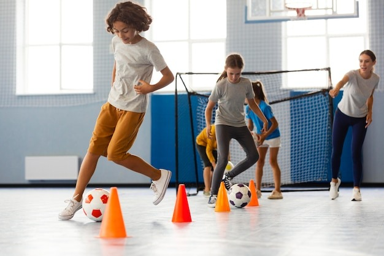

Um site de notícias da escola Albatroz.

Um site de notícias da escola Albatroz.
Data da Publicação: 23/04/2024 22:53:00
Autores:
A falta de materiais esportivos na Escola Albatroz limita as atividades nas aulas de Educação Física, desestimulando a participação dos alunos. A escassez de itens básicos como bolas, redes, cordas e coletes restringe as opções de exercícios e jogos, tornando as aulas menos dinâmicas e motivadoras. Essa carência impacta negativamente o aprendizado, desenvolvimento e entusiasmo dos alunos pelas atividades físicas.
É fundamental que a escola tome medidas para solucionar o problema, como a aquisição de novos equipamentos e a manutenção regular dos já existentes. A Educação Física é essencial para a formação integral dos alunos, e a falta de materiais compromete o alcance dos objetivos dessa disciplina. A Escola Albatroz precisa investir em materiais esportivos de qualidade para garantir aulas dinâmicas, motivadoras e divertidas para todos os alunos.